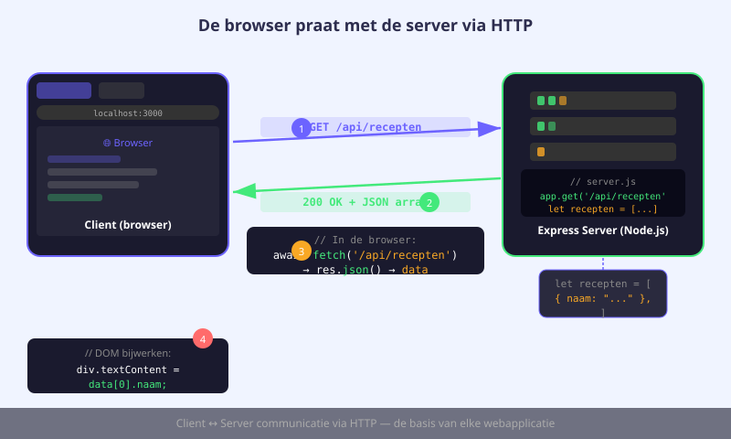
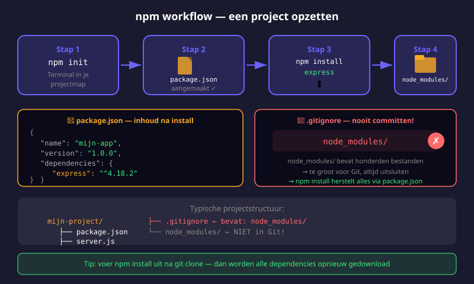
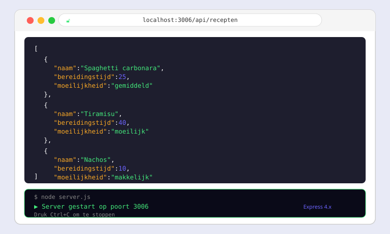

Node.js & npm
- Uitleggen wat Node.js is en waarom het bestaat
- Node.js en npm controleren via de terminal (
node -v,npm -v) - Een nieuw project initialiseren met
npm init - Een pakket installeren met
npm installen begrijpen watnode_modulesenpackage.jsondoen - Uitleggen waarom
node_modulesniet in git gecommit wordt - Een minimale webserver bouwen met Express
- Statische bestanden aanbieden via
express.static - GET- en POST-routes schrijven met Express
- Een eenvoudige REST API bouwen met een in-memory array
20.1 Wat is Node.js?
Tot nu toe draaide alle JavaScript die je schreef in de browser. Node.js is een runtime die de V8-engine van Chrome buiten de browser laat draaien — op je eigen computer of op een server. Hierdoor kan je JavaScript gebruiken voor webservers, REST API's, scripts en tooling.

JavaScript in de browser vs Node.js
| Browser | Node.js | |
|---|---|---|
| Omgeving | Browservenster | Terminal / server |
| Toegang tot DOM | Ja (document, window) | Nee |
| Toegang tot bestandssysteem | Nee | Ja (fs-module) |
| Gebruik | Front-end, UI, interactie | Back-end, API's, scripts |
Installeren en controleren
Download Node.js via nodejs.org (kies de LTS-versie). Na de installatie controleer je de versie in de terminal:
node -v
# v22.14.0 (of een recentere versie)
npm -v
# 10.9.220.2 npm — Node Package Manager
npm staat voor Node Package Manager. Het is de pakketbeheerder die automatisch meegeïnstalleerd wordt met Node.js. Via npm installeer je externe bibliotheken die anderen hebben geschreven.

Een nieuw project starten: npm init
mkdir mijn-server
cd mijn-server
npm init -yDe vlag -y antwoordt automatisch "ja" op alle vragen. Het resultaat is een package.json-bestand. Voeg "type": "module" toe zodat je de moderne import/export-syntax kan gebruiken:
{
"name": "mijn-server",
"version": "1.0.0",
"main": "server.js",
"type": "module",
"scripts": {
"start": "node server.js"
}
}Een pakket installeren: npm install
npm install expressDit doet drie dingen: downloadt Express naar node_modules/, voegt het toe aan "dependencies" in package.json, en maakt package-lock.json aan.
node_modules en .gitignore
De node_modules/-map bevat alle gedownloade pakketbestanden — dat kunnen duizenden bestanden zijn. Je commit deze map nooit in git:
# Inhoud van .gitignore
node_modules/Iemand anders die jouw project kloont, installeert alles opnieuw met npm install.
20.3 Express — een eenvoudige webserver
Express is het meest gebruikte Node.js-framework voor webservers en API's. Het maakt het eenvoudig om HTTP-routes te definiëren, JSON te verwerken en statische bestanden aan te bieden.
De basis: een Express-app opzetten
// server.js
import express from 'express';
const app = express();
const port = 3000;
app.listen(port, () => {
console.log('Server gestart op poort: ' + port);
});Middleware: express.static en express.json
// Statische bestanden aanbieden vanuit de map 'Client'
app.use(express.static('../Client'));
// JSON-body's parsen — nodig voor POST-verzoeken
app.use(express.json());Mapstructuur met aparte Client-map
mijn-project/
├── Server/
│ ├── server.js
│ ├── package.json
│ └── node_modules/
└── Client/
├── index.html
├── style.css
└── app.jsRoutes: GET en POST
// GET /api/begroeting
app.get('/api/begroeting', (req, res) => {
res.json({ bericht: 'Hallo van de server!' });
});
// POST /api/begroeting
app.post('/api/begroeting', (req, res) => {
const naam = req.body.naam; // data uit de request-body
console.log('Ontvangen naam:', naam);
res.status(204).end(); // 204 = No Content
});| Methode | Wat het doet |
|---|---|
res.json(data) | Stuur JSON terug (status 200) |
res.send('tekst') | Stuur tekst terug |
res.status(404).end() | Stuur status 404 zonder body |
res.status(204).end() | Stuur status 204 (verwerkt, geen content) |
20.4 Een minimale REST API bouwen
We bouwen stap voor stap een API die berichten bijhoudt in een in-memory array — gebaseerd op de chat-servercode uit de cursus.
// Server/server.js — volledige versie
import express from 'express';
const app = express();
const port = 3006;
app.use(express.static('../Client'));
app.use(express.json());
let berichten = [
{ nickname: 'systeem', message: 'Server is gestart!' }
];
// GET: alle berichten ophalen
app.get('/api/chat', (req, res) => {
res.json(berichten);
});
// POST: een bericht toevoegen
app.post('/api/chat', (req, res) => {
berichten.push({
nickname: req.body.nickname,
message: req.body.message
});
res.status(204).end();
});
app.listen(port, () => {
console.log('Server gestart op poort: ' + port);
});De array berichten leeft in het geheugen van het Node.js-process. Dat betekent dat alle data verdwijnt als de server herstart. In een echte applicatie gebruik je een database voor persistente opslag — dat behandelen we bij Databeheer.
De API testen vanuit de front-end
// Client/app.js
// GET: alle berichten ophalen
async function haalBerichtenOp() {
const response = await fetch('/api/chat');
const berichten = await response.json();
console.log(berichten);
}
// POST: een bericht sturen
async function stuurBericht(nickname, message) {
await fetch('/api/chat', {
method: 'POST',
headers: { 'Content-Type': 'application/json' },
body: JSON.stringify({ nickname, message })
});
}- Node.js officiële docs — API-documentatie van Node.js
- npmjs.com — zoek npm-packages en lees hun README en changelog
- Express.js docs — officiële documentatie van Express
- Node.js release schedule — volg nieuwe versies
Oefeningen
Maak een mini-project met de volgende structuur:
recepten-app/
├── Server/
│ ├── server.js
│ └── package.json
└── Client/
├── index.html
└── app.jsDe server moet:
- GET
/api/recepten— stuurt een hardgecodeerde array van 3 recepten terug als JSON. Elk recept heeft eennaamenbereidingstijd(in minuten). - POST
/api/recepten— voegt een recept toe vanuitreq.body, retourneert status 204 - Statische bestanden aanbieden vanuit de
Client/-map

Testprocedure:
- Open een terminal, ga naar de
Server/-map:cd Server - Installeer dependencies:
npm install - Start de server:
node server.js - Open
http://localhost:3000in de browser - Controleer
http://localhost:3000/api/recepten
Schrijf voor de Recepten-API een korte API-documentatie in een README.md-bestand. Beschrijf voor elke route:
- De HTTP-methode en URL
- Wat de route doet
- De verwachte body (voor POST)
- De verwachte response (statuscode en formaat)
Breid de Recepten-API uit met een DELETE-route:
app.delete('/api/recepten/:naam', (req, res) => {
const naam = req.params.naam;
recepten = recepten.filter(r => r.naam !== naam);
res.status(204).end();
});Voeg aan de front-end een verwijderknop toe naast elk recept. De knop roept de DELETE-route aan en ververst daarna de lijst.
Huistaak
Opdracht: Volledige takenlijst-applicatie
Bouw een takenlijst-app met een Node.js-server en een HTML-front-end.
Deel 1 — Server (4 punten)
- GET
/api/taken— stuurt alle taken terug als JSON (elke taak:id,titel,voltooid) - POST
/api/taken— voegt een nieuwe taak toe (titelkomt uitreq.body), geeft een uniekidviaDate.now() - DELETE
/api/taken/:id— verwijdert de taak met het opgegeven id - Statische bestanden aanbieden vanuit de
Client/-map
Deel 2 — Front-end (3 punten)
- Toon alle taken in een lijst bij het laden van de pagina
- Een formulier om een nieuwe taak in te geven
- Een verwijderknop naast elke taak
Deel 3 — Indiening (3 punten)
- Lever de volledige map in zonder
node_modules/ - Voeg een
README.mdtoe met instructies om de server te starten
Deel 4 — npm changelogs lezen (2 punten)
Elke npm-package heeft een changelog of release-history. Zoek op npmjs.com:
- Zoek de package
express. Welke versie is momenteel de laatste stabiele versie? - Klik op "Versions" of de GitHub-link. Beschrijf in 2 zinnen wat er nieuw was in de laatste major versie (bv. Express 5.x vs 4.x).
- Bonus: Zoek 1 alternatieve web framework voor Node.js (bv. Fastify, Koa, Hapi). Wat is het verschil met Express?
Vragenlijst
Controleer of je de leerstof van dit hoofdstuk begrijpt.
Wat is het verschil tussen JavaScript in de browser en Node.js?
Welk commando gebruik je aan het begin van elk nieuw Node.js-project?
Waarom zet je node_modules/ in .gitignore?
Welke statuscode stuur je terug bij een POST-verzoek dat succesvol verwerkt is maar geen data teruggeeft?
Wat doet app.use(express.json()) in een Express-server?
Welke regel is nodig in package.json om de moderne import/export-syntax te kunnen gebruiken?